要想知道什么是红黑树，首先要了解什么是二叉查找树。
什么是二叉查找树？
二叉查找树的特性：
1）左子树上所有节点的值均小于或等于它的根节点的值
2）右子树上所有节点的值均大于或等于它的根节点的值
3）左右子树也一定为二叉排序树
下面就是一颗标准的二叉查找树：
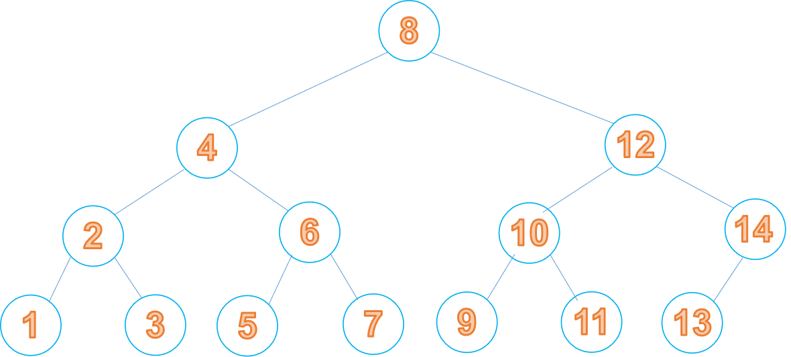
我们在向二叉查找树中进行增加或删除节点的操作时，会出现树的倾斜情况，比如下面的情况：
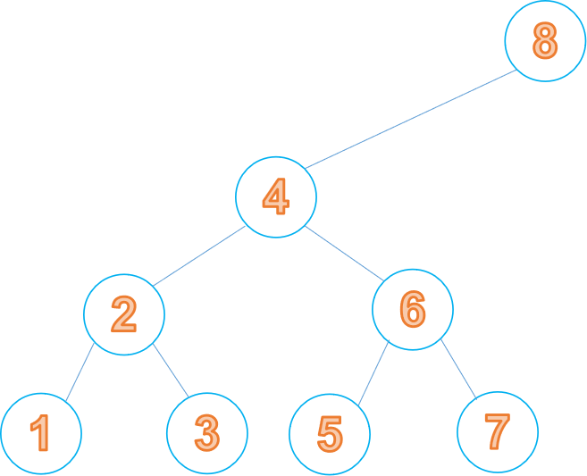
为了解决这个问题，产生了红黑树。
什么是红黑树？
红黑树的特性：
1）节点是红色或者黑色
2）根节点是黑色
3）每个叶子节点都是黑色的空节点
4）每个红色节点的两个子节点都是黑色的
5）从任意节点到其每个叶子的所有路径都包含相同的黑色节点
只要满足这五个特性，就是一颗红黑树，红黑树的平衡操作，也是针对这五个特性来做的。下面介绍一下红黑树是怎么进行插入以及删除操作的。
红黑树的插入：
我们假设红黑树当前的状态如下图所示
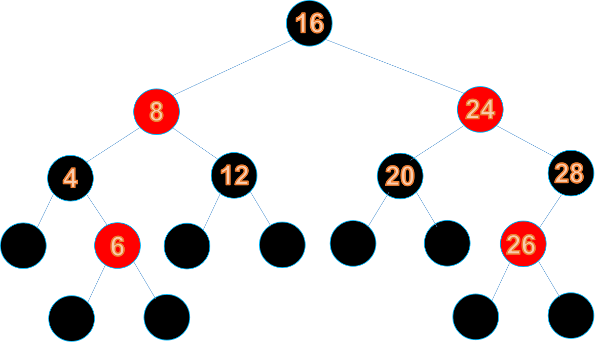
我们向其中插入节点25，插入之后如下所示：
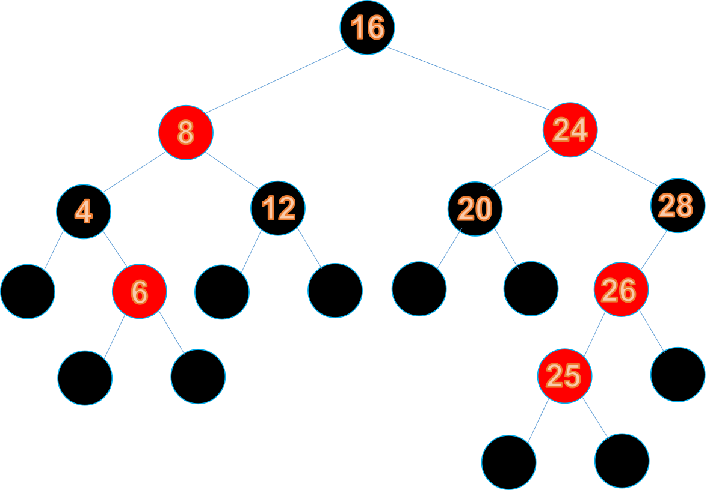
为了满足特性五，节点25的初始状态必须是红色节点，但是我们发现它的父节点26也是红色节点，打破了特性4：每个红色节点的两个子节点都是黑色的，此时红黑树需要作出调整
调整方式：
1）变色
由于26不满足特性4，所以将26变为黑节点
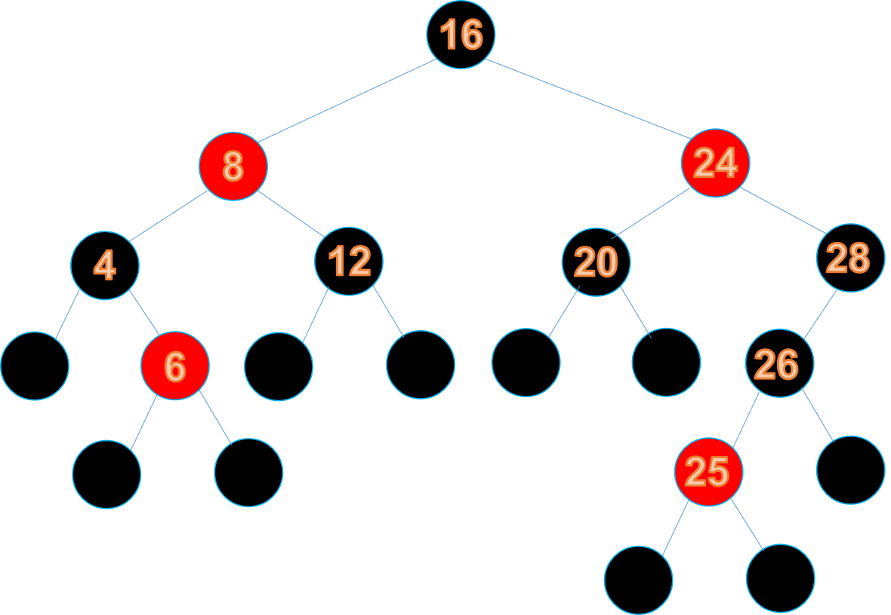
这样又违背了特性5，所以把28变为红节点
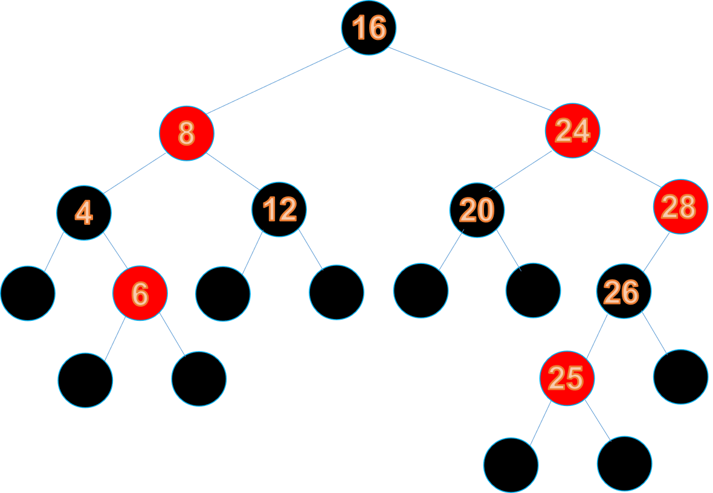
此时，如果继续将节点24变为黑色，那么节点16将无法变换，所以根节点需要进行左旋转（24作为根节点，它的父节点作为它的左子树，它的左子树作为父节点的右子树）
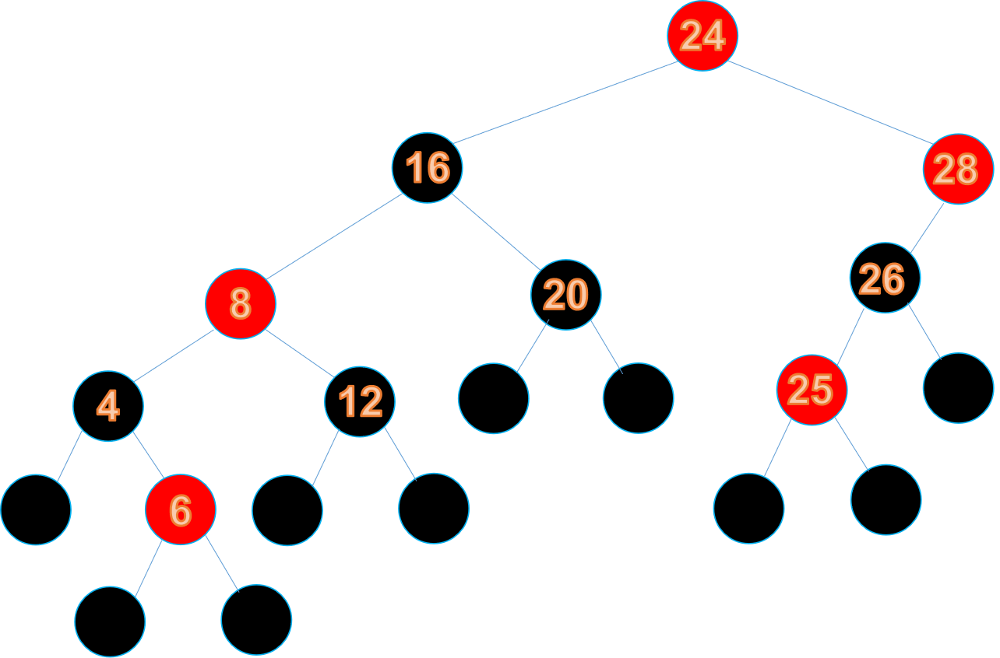
此时不满足特性2，根节点必须为黑色，所以将根节点变为黑色
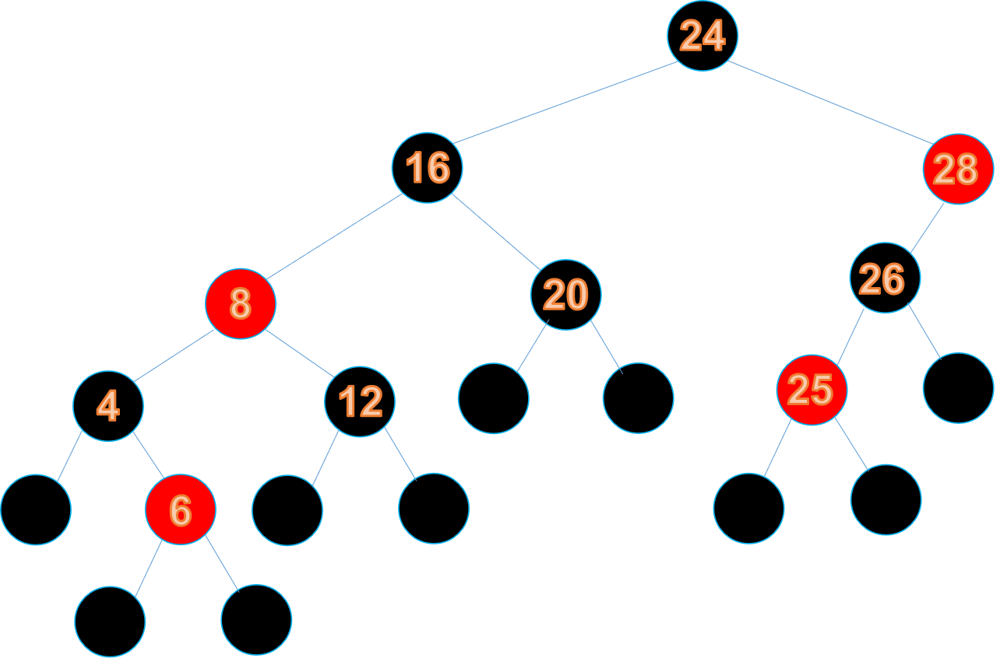
此时以节点16为根的子树不满足特性5，所以将节点16进行右旋转
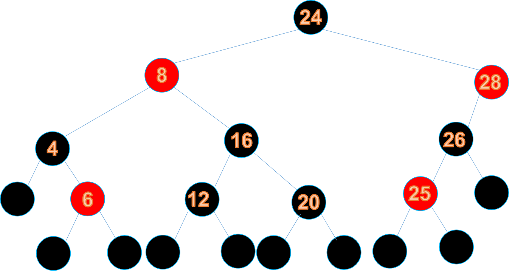
根据规则，将节点12和20变为红节点
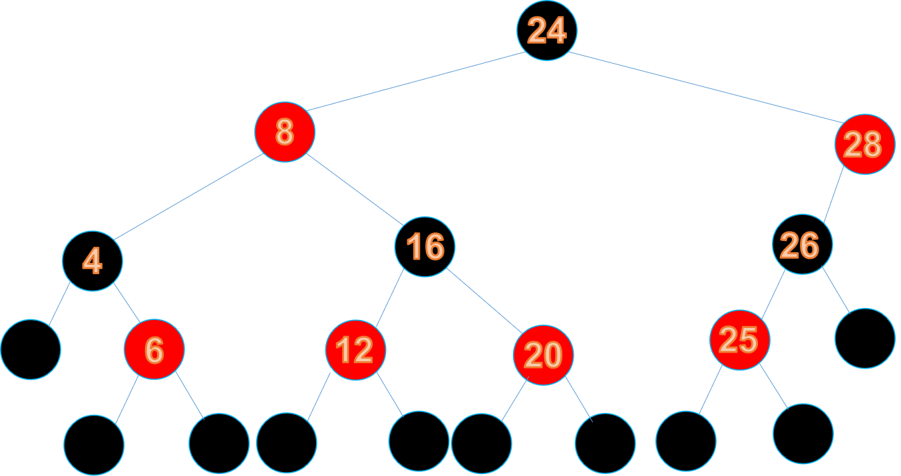
调整结束
由此我们就会发现，红黑树的五个特性互相制约，确保了红黑树中除叶子节点外，相同颜色的两个节点不会相连，进而保证了不会出现某条路径比其他路径长出两倍的情况
在对红黑树进行平衡的过程中，要尽量进行变色操作，一旦发现变色解决不了问题了，才会对其进行旋转
红黑树的删除：
想要对红黑树进行删除操作，首先要把它当做一颗二叉查找树，对二叉查找树进行节点的删除，然后再对其做平衡调整
二叉查找树节点的删除主要有以下几种情况：
1）待删除的节点无左右孩子
此时只需要将该节点直接删除就好
2）带删除的节点只有左孩子或者右孩子
此时需要将该节点删除，并让它的父节点指向他的左孩子或是右孩子
3）待删除的节点既有左孩子又有右孩子
首先需要找出它的右子树的最左孩子，换句话来说就是右子树中最小的节点，然后将该节点与待删除的节点进行互换，最后将该节点删除，因为是交换的节点是它右子树的最左孩子，所以该节点只会有两种情况
1）该节点无左右孩子，此时对应情况1
2）该节点有右孩子，此时对应情况2
根据具体的情况，进行对应的操作就好了
这样，我们就完成了节点的删除，下面需要对红黑树进行平衡了
我们看下面这张图：
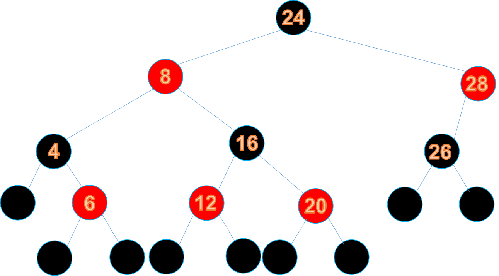
假如我们要删除节点26，我们可以看到满足情况1，该节点无左右孩子，所以我们可以直接把节点26删除，删除之后就是下面这个样子：
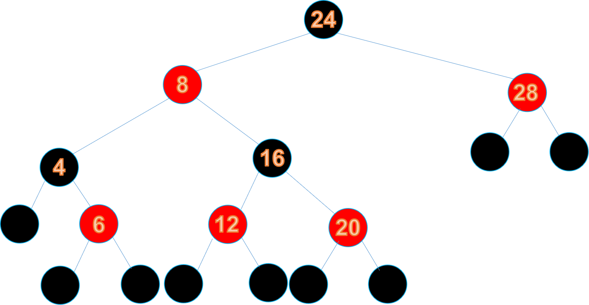
此时，我们发现从根节点开始遍历，遍历到左节点所经过的黑色节点数与遍历到有右节点所经过的黑色节点数不同，此时需要对其进行平衡。若要使其满足特性五，我们发现无法通过简单的变色操作进行平衡，所以需要对其进行右旋，旋转之后的红黑数就是下面这个样子
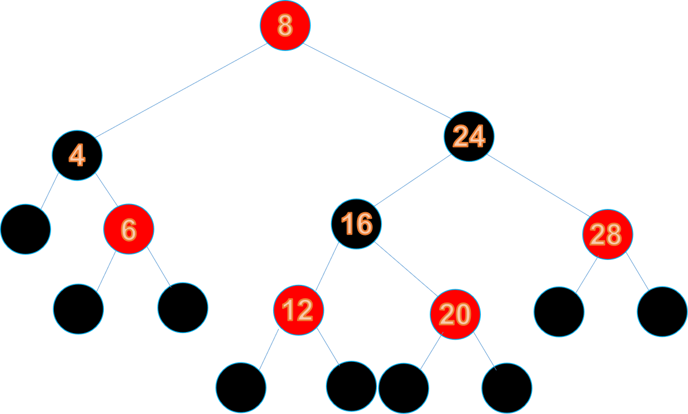
然后为了满足条件1，我们把根节点变为黑色
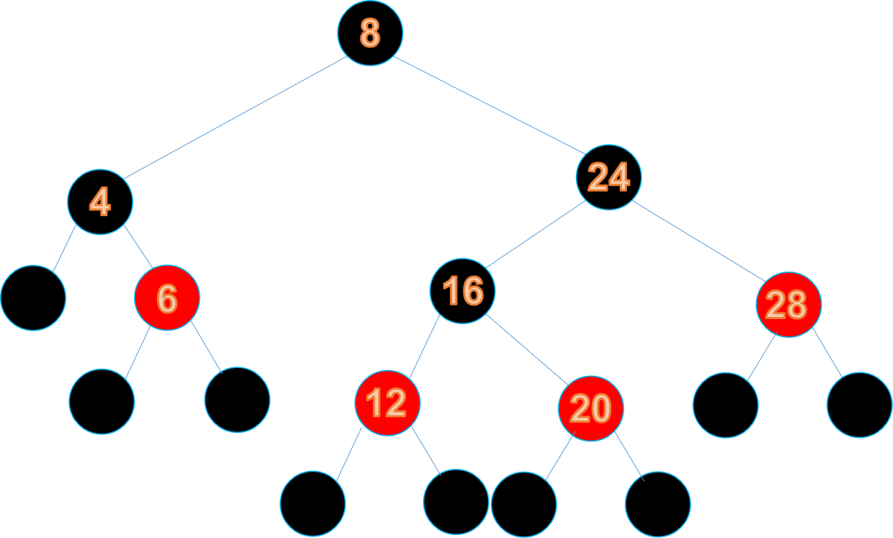
然后我们发现遍历右子树的叶子节点经过的黑色节点数要多于左子树，所以将节点24变为红色，再把节点28变为黑色：
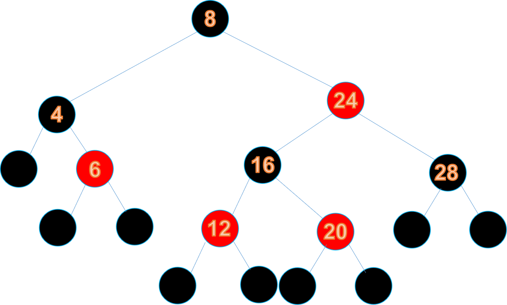
这样就完成了红黑树的删除操作啦。